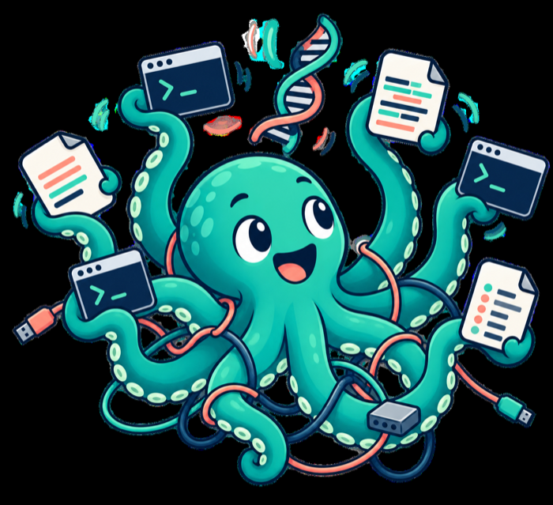
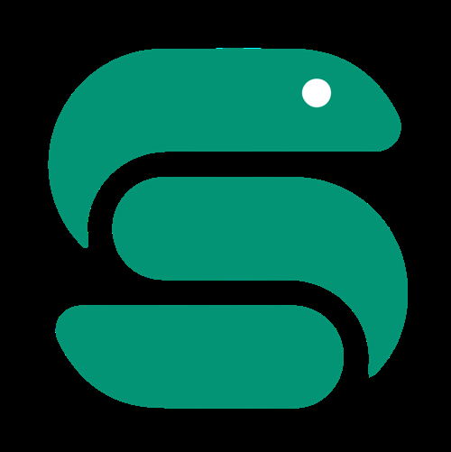
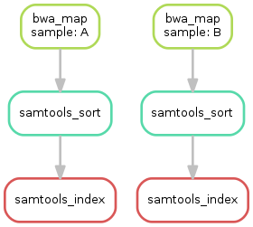
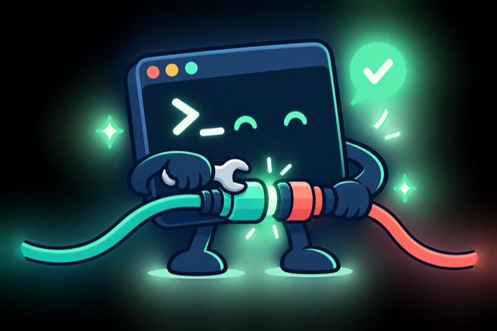

Workflow Management in Bioinformatics and Deep Learning
Worlds Apart in Workflow Management
In bioinformatics, analyzing a single sample often involves a dozen or even several dozen independent command-line tools developed by different laboratories: BWA for alignment, samtools for sorting, GATK for variant calling, and FastQC for quality control, for example. Written in languages ranging from C and C++ to Python and Perl, these tools also work with a variety of file formats, including FASTQ, SAM/BAM, and VCF. For large analyses that must be reproducible, workflow engines such as Nextflow and Snakemake often bring these separate tools together through scripts and containers (Docker or Singularity). One reason is that bioinformatics software is developed and maintained by research groups large and small all over the world.


By contrast, the model-training stage of deep learning is usually more cohesive. Frameworks such as PyTorch and TensorFlow provide a relatively unified programming environment: data loading, the forward pass, loss computation, backpropagation, and optimizer updates can all happen in the same codebase. There is no need to write an intermediate file and invoke a separate external program at every step. One reason is that PyTorch and TensorFlow are developed and maintained by large companies such as Meta and Google.
End-to-end programmability: Data loading (DataLoader), the model’s forward pass (Forward), loss computation (Loss), backpropagation (Backward), and optimizer updates (Optimizer) can flow through a single Python script or framework object, without repeatedly writing intermediate files and calling standalone external binaries.
A more cohesive model-training workflow: Bioinformatics pipelines can branch into hundreds or thousands of tool combinations depending on the sequencing platform, reference genome version, and analytical goal (RNA-seq versus ChIP-seq). Deep-learning code, meanwhile, is highly modular: changing a model architecture or loss function may take only a few lines of Python, without requiring Nextflow to orchestrate separate applications.
What Does Standardization Look Like in Deep Learning?
Although deep learning does not always need a workflow engine to connect a collection of standalone tools, it faces its own challenges in experiment management, hyperparameter search, model deployment, and pipeline reproducibility. Different layers of standardization have therefore emerged:
Lifecycle and experiment tracking (in the spirit of nf-core)
- MLflow: Manages the machine-learning lifecycle by recording training parameters, code versions, evaluation metrics, and model weights so that experiments can be reproduced.
- Weights & Biases (W&B): A widely used tool in industry and academia for visualizing and tracking experiments, and for comparing performance across training runs.
Production-scale pipeline orchestration (the closest parallel to a workflow engine)
- Kubeflow: A Kubernetes-based machine-learning toolkit that can orchestrate data preprocessing, distributed training, model validation, and deployment as a directed acyclic graph (DAG).
- TFX (TensorFlow Extended): A production-grade ML platform developed by Google for standardized pipelines covering large-scale data validation, training, and inference.
Easy reuse and reproducibility (a research-side analogue to nf-core)
- Hugging Face Transformers / Timm: In areas such as computer vision and natural language processing, these libraries serve as collections of standard building blocks. Instead of writing every training loop and low-level operation from scratch, you can use packaged models and datasets to assemble a complete workflow.
One Workflow to Rule Them All?
To be fair, standards start with good intentions. Each promises to bring order to a fragmented field. It is a little like the ambition behind Tolkien’s One Ring: one ring to rule them all. Yet every new standard can become another little kingdom, complete with its own rules and followers. Each would like developers to enter its orbit, but reality is less accommodating. When one standard disappoints, another appears. The race to standardize can end in a proliferation of standards. Workflow languages alone now include Snakemake, Nextflow, CWL, and WDL.
Here is the kind of task-dependency graph a workflow engine like Snakemake builds and runs – two samples, each moving through alignment, sorting, and indexing independently:

Back to Basics

What is the most basic language for invoking bioinformatics tools? The shell on Linux and other Unix-like systems – most often Bash.
Why? Because we commonly use the shell to call bioinformatics software on a server. Whatever framework sits above it, an analysis ultimately comes down to concrete tasks: which files go in, which commands run, which parameters are used, and which results come out. That points to two principles for building bioinformatics workflows:
- For a small, one-off analysis, a shell script may be all you need.
- As the workflow grows more complex, Python can handle the logic, or Nextflow or Snakemake can manage the tasks. In either case, the commands each task actually runs and the logs it produces should be easy to inspect.
These principles also help us judge a workflow framework. A good one manages complexity while keeping what actually runs transparent.